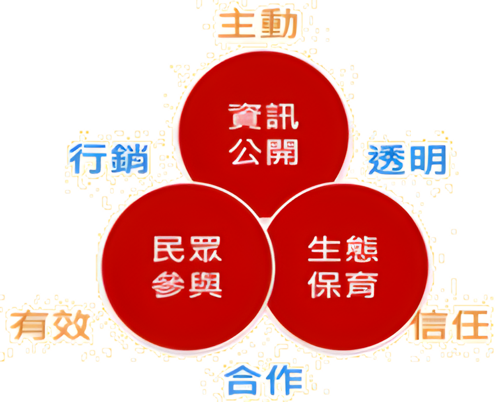

景丰生態檢核作業委託服務簡介
結合生態檢核、生態調查及工程領域之專業加成，組成跨領域之專業團隊，各成員均十分熟悉其專業領域，且針對本計畫重點需求組織工作分組，以提供最佳生態檢核作業專業技術服務。景丰公司現為「生態專業技術服務商業同業公會」正式會員，已為業界生態檢核辦理經驗豐富之專業顧問公司，且對於水利工程生態檢核特性之執行重點課題相當熟悉；考量工程場址生態環境及土地利用之多樣性，具有專業生態調查經驗負責各項物種補充調查工作。 （瞭解詳情）
生 態 檢 核 沿 革 與 簡 介
生態檢核機制最早為水利署、水保局及林務局等單位於石門水庫整治計畫下開始發展，經數年的積極辦理推動並獲得成效後，各單位分別依任務目標與工程特性擬定相關作業準則，包括水保局「環境友善措施標準作業書」、水利署「水庫集水區工程生態檢核執行參考手冊」、「水利工程生態檢核作業機制」、林務局「國有林治理工程加強生態保育注意事項」等。
為減輕公共工程對生態環境造成之影響，並落實生態工程永續發展理念，維護生物多樣性資源與環境友善品質，公共工程委員會於95年度辦理「建立生態工程案件檢核評估作業之研究」委託研究案，初步建立相關檢核評估表，續於 96年4月函請內政部、經濟部、交通部、環境部及行政院農業委員會進行試辦作業後，由各部會本權責推動。

公共工程委員會考量公共工程應注重生態保育，研訂「公共工程生態檢核機制」，於106年4月11日辦理研商會議達成共識後，請各計畫中央目的事業主管機關將本機制納入計畫應辦事項。另於106年4月25日頒訂「公共工程生態檢核機制」並於110年10月06日工程技字第1100201192號函修訂為「公共工程生態檢核注意事項」，函請目的事業主管機關將生態檢核納入計畫應辦事項，以減輕公共工程對生態環境造成負面影響，秉生態保育、公民參與及資訊公開之原則，落實生態保育之政策。
公 共 工 程 生 態 檢 核 作 業 流 程
作業流程圖」
主 要 實 績
- 「金門縣中心圖書館及美術館新建工程」規劃設計監造技術服務案-複委託辦理生態檢核 （瞭解詳情）
- 國立清華大學南校區開發重新辦理環境影響評估-委託辦理生態檢核
- 嘉義縣仁義潭風景特定區10米計畫道路(環潭公路至台3線)新闢工程委託規劃設計及後續擴充監造服務-複委託辦理生態檢核
- 新竹左岸生態環境與棲地改善工程-複委託辦理生態檢核 （瞭解詳情）
- 頭前溪舊港島調節池及環島保護工環境改善工程(二)-複委託辦理生態檢核
- 「縣道169(7K+000~16K+500/21K+923~50K+200)及縣道159甲(18K+270~45K+554)道路拓寬改善工程」委託先期規劃評估服務-複委託辦理生態檢核 （瞭解詳情）
- 「縣道166(51K+700~81K+718)及縣道162甲(14K+000~47K+173)道路拓寬改善工程」委託先期規劃評估服務-複委託辦理生態檢核 （瞭解詳情）
- 新竹外環輸送油品管線新建工程環境影響評估工作-委託辦理生態檢核
- 三灣鄉苗17線0K+800-1K+150瓶頸路段拓寬改善工程-生態檢核計畫委託專業服務工作 （瞭解詳情）
- 苗栗縣生態檢核工作計畫（108-109年度） （瞭解詳情）
- 107年度彰化縣生態檢核工作計畫委託專業服務 （瞭解詳情）